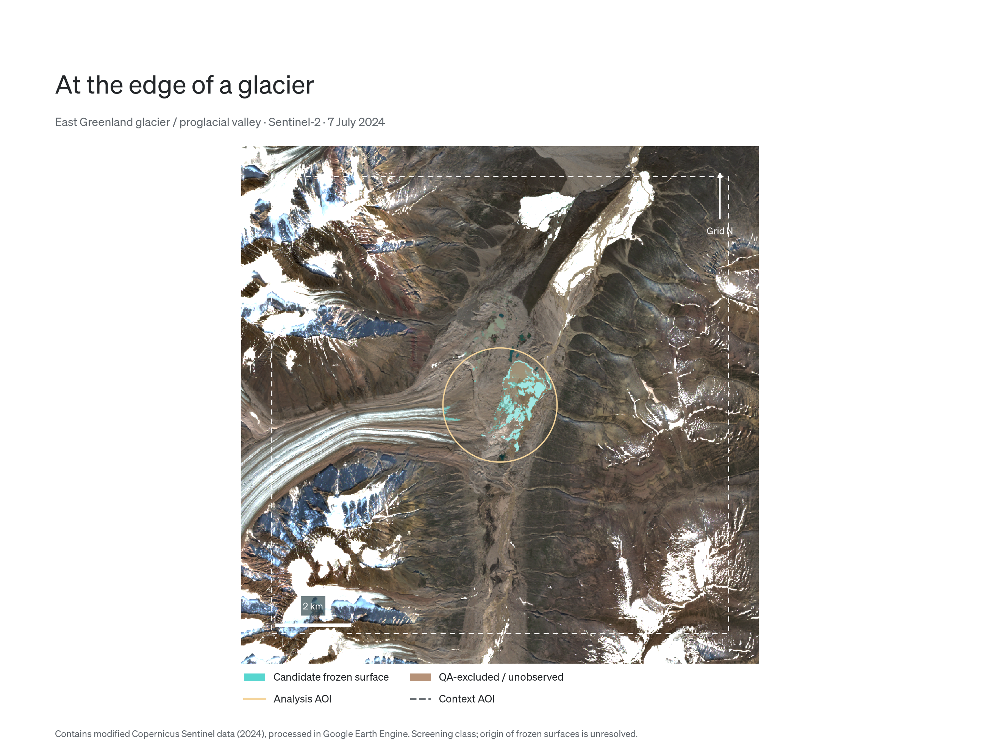
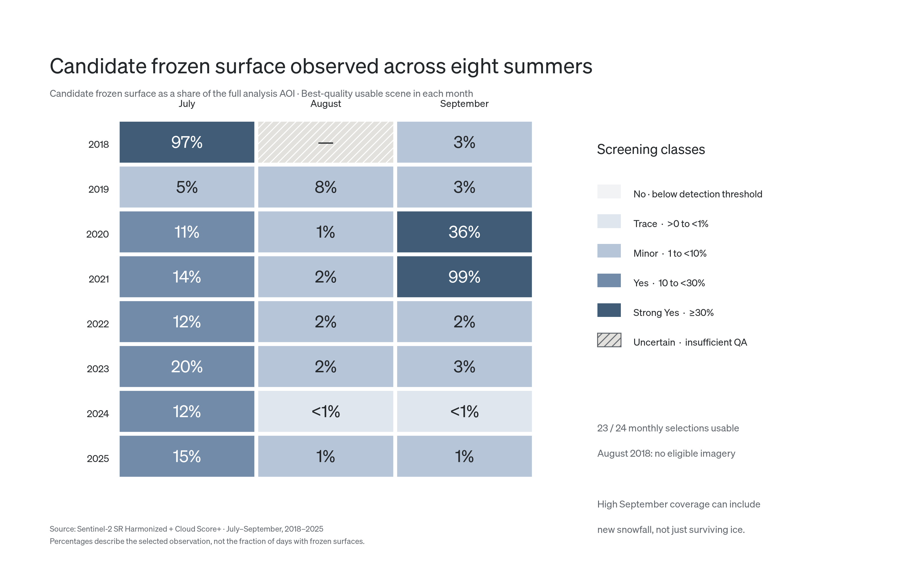
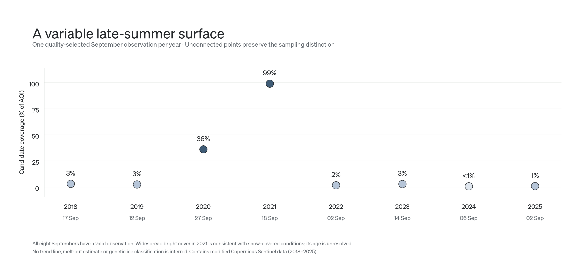
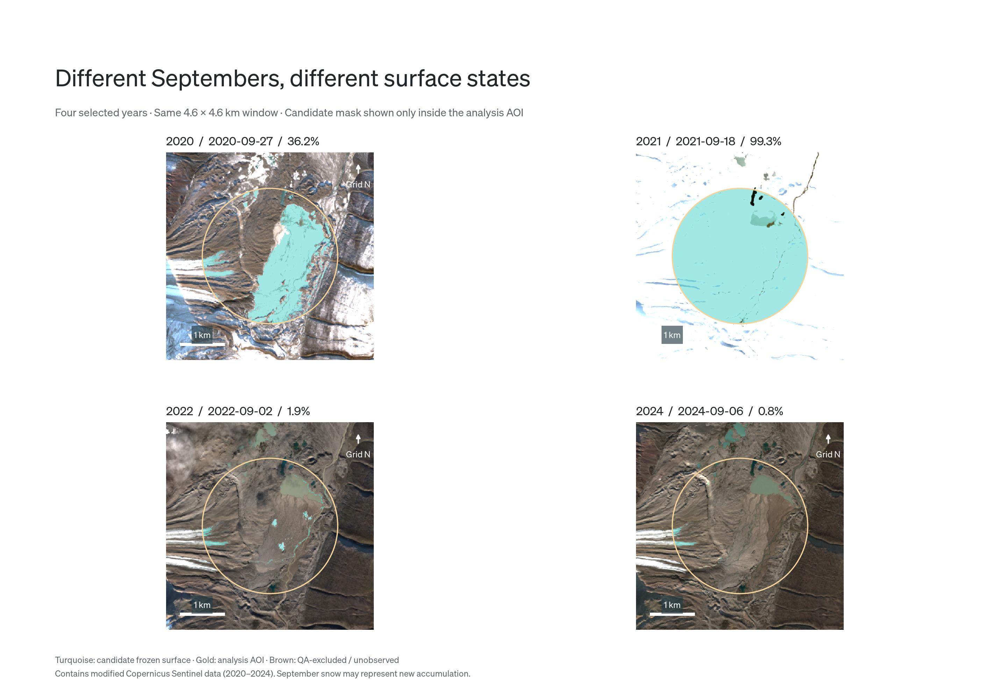

Google Earth Engine / Independent public-data demonstration
Reading a short Arctic summer.
How much snow- or ice-like surface remains visible as summer progresses? A fixed East Greenland
analysis area brings eight summers of Sentinel-2 observations into a consistent, quality-screened view.
Data
Sentinel-2 SR Harmonized + Cloud Score+
Scope
July–September · 2018–2025
Workflow
Earth Engine raster analysis · Python graphics
Within one summer
In the selected 2024 observations, mapped candidate coverage falls from 12.1% in July to 0.8% in September.
The three snapshots do not establish a daily trajectory or melt-out date.
From imagery to a readable signal
This demonstration combines satellite raster processing, explicit quality checks and visual communication.
Earth Engine screens and classifies imagery, measures candidate area and ranks observations. Python turns the
resulting tables and rendered previews into the graphics shown here.
The analysis circle has a 1.5 km radius and includes the glacier terminus as well as the proglacial valley.
“Candidate frozen surface” is a spectral screening class: it does not distinguish glacier ice, other ice or
newly fallen snow.

A fixed analysis area
This satellite image shows a glacier and the valley in front of it in East Greenland on 7 July 2024. The gold circle marks the study area, while the dashed white box shows the wider surroundings. Turquoise patches highlight possible snow or ice, covering approximately 12% of the study area that day. These detections show where frozen surfaces may be present, but do not establish what type of ice they are or how they formed.
Only the circular analysis area contributes to the statistics. The larger context view locates the glacier
edge, sediment, meltwater ponds and bright surface patches.
Processing and quality control
01 / Screen
Keep usable pixels
Cloud Score+ ≥0.60 and scene-classification exclusions remove cloud, shadow and invalid pixels. Snow/ice
remains eligible. Monthly interpretation requires at least 90% usable area.
02 / Classify
Apply a fixed rule
On a 20 m UTM grid: NDSI >0.4 and mean visible reflectance >0.2. A water-class veto reduces pond
false positives. Retained patches contain at least three connected pixels, nominally 1,200 m².
03 / Select
Compare observations
Each month uses one quality-ranked scene. Candidate area is divided by the full analysis area, with no
extrapolation over excluded pixels, temporal mosaic or interpolation across gaps.

Eight summers
23 of 24 monthly selections are usable; August 2018 has no eligible imagery. “No · below detection threshold”
means no candidate remains after patch filtering, not proof that every original pixel was noncandidate.

September observations
Each point represents a separately selected scene. Acquisition timing and possible new snowfall affect the
observed coverage; these observations do not establish survival from July or a long-term trend.

Spatial contrasts
Identical extents and display settings make four Septembers comparable as observed surface states. Broad
bright cover in 2021 is consistent with snow-covered terrain; its age is unresolved.
What the checks establish
The supplied audit reconciles 212 scene records, including 151 valid scenes, with 24 monthly selections and
eight valid September observations. Checks cover area balance, classification bins, ranking, missing data and
yearly summaries. These are arithmetic and aggregation checks, not a ground-truth accuracy assessment.
Scientific raster processing runs in Earth Engine. The local map images are rendered display previews, not
georeferenced raster exports, and are never used to calculate the statistics.